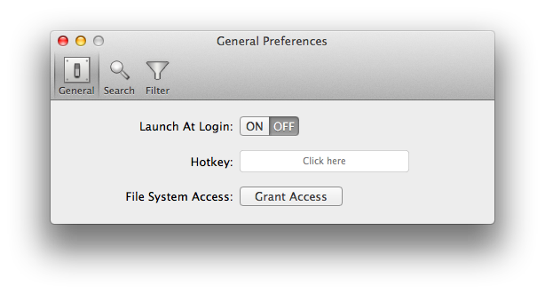
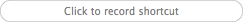
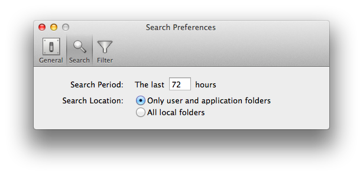
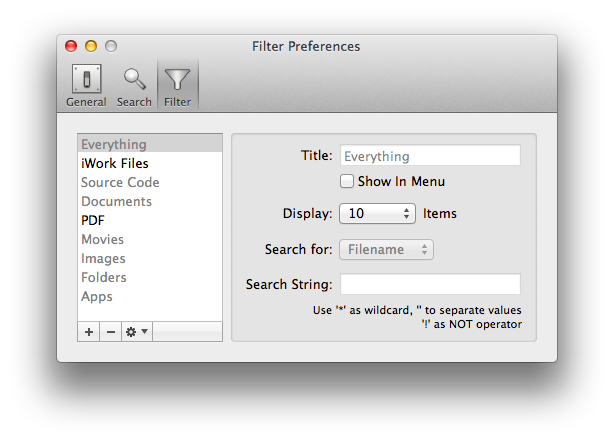
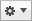

You can configure Recent Menu in three preferences panes wich are accessible from the menu bar menu.

In the general preferences pane you can set Recent Menu to start automatically when you login. By default this is option is not enabled.
You can also set a customizable hotkey to access Recent Menu (after it has been started and is visible in the system menu bar). By default, this option is not enabled as no hotkey is defined. To turn on this option, just define a hotkey. To achieve this, klick on the hotkey input field:  and press the combination of keys you would like to use as hotkey. You have to use a combination between a normal key and a modifier key (Shift, Alt, Control, Command). Once you have successfully entered a combination of keys, this combination is shown in the hotkey input field:  (in this example: Alt+F). This also enables the hotkey. To disable the hotke function, just lick on the cross at the right side of the hotkey input field.
(in this example: Alt+F). This also enables the hotkey. To disable the hotke function, just lick on the cross at the right side of the hotkey input field.
Starting with Version 1.2.1, Recent Menu runs in a sandbox. This means that it has basically no access to your file system, which is good for security. However, in order to work, it needs to have read access, as otherwhise it couldn't monitor which files and folders you've recently accessed. You have therefore to grant Recent Menu these access rights by clicking on the Grant Access button and by confirming the selection in the file dialog. You have to do this only once, but without these access rights Recent Menu won't work.

Search preferences allow you to adjust for which period of time ("Search Period") Recent Menu will monitor file and folder access. A higher value here means that Recent Menu will show more items. Typical values would be anything between a couple of hours and a couple of days (measured in hours). Files and folders which have been accessed before a longer time than it is defined here won't be shown by Recent Menu.
You may also adjust the locations in which Recent Menu will look for recently accessed items ("Search Location"). If you decide to let Recent Menu only monitor user and application folders this will show not everything typicalle accessed on your computer, though it will cover more or less any files and folders you have created. If you decide to let Recent Menu monitor all local folders you will get more results, depending on your filter settings.

The filter preferences pane allows you to define and edit custom filters and to change the order in which the filters are shown in the recent items list. Filters which are enabled will be shown in the recent items list in the same order in which they appear in the source view. To change the order of filters, just drag and drop filters inside the source view. To enable or disable filters, click on the "Show in Menu" button. Add a new filter by clicking on the button and delete a filter by clicking on the button.
By clicking on the  button and then on the "reset filters" command you can reset all filters to its built-in settings.
On the right side of the filter settings pane you can edit the titles of filters, set the number of entries shown for each filter and activate or deactivate each filter. Filters which are deactivated won't be shown in the list of recent items. To define the filter criteria, please follow these rules: